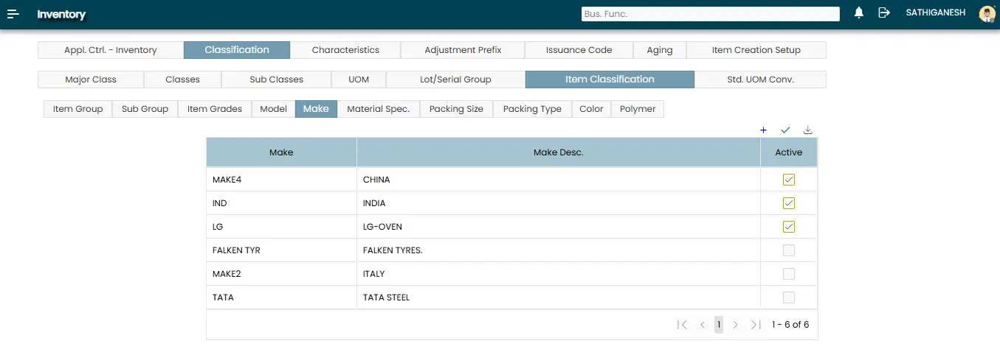

<div data-category="Inventory Control" data-title="Make" data-updated="January 27, 2026" data-contributors="RoadmapIT" data-breadcrumb="Home,Inventory Control,Make">
  <div class="page-content">
    <p>An item make refers to the brand or origin of an item, an item make can be used to differentiate or categorize the inventory items based on their quality, features, or price.</p>
    <p>The Item Make and Make Description are defined in this screen. The Make cannot be modified or deleted when there exist child records.</p>
    <h5>Navigation path:</h5>
    <p class="fs-6">Supply Chain Management \ Inventory \ Setup \ Setup - Inventory</p>
    
    <ul style="list-style-type: none; align-content: center">
      <li class="mouse-icon">
        Click
        <i class="bi bi-plus fs-4 mx-2 text-primary"></i>
        button to create the Make
      </li>
      <li class="mouse-icon">Enter Make.</li>
      <li class="mouse-icon">Enter Make Desc.</li>
      <li class="mouse-icon">Enable Active Flag</li>
      <li class="mouse-icon">
        Click
        <i class="bi bi-check-lg fs-4 mx-1 text-success"></i>
        to Save the Make.
      </li>
    </ul>
  </div>
</div>
